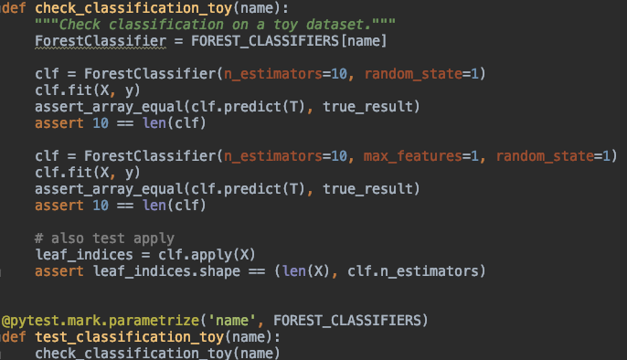
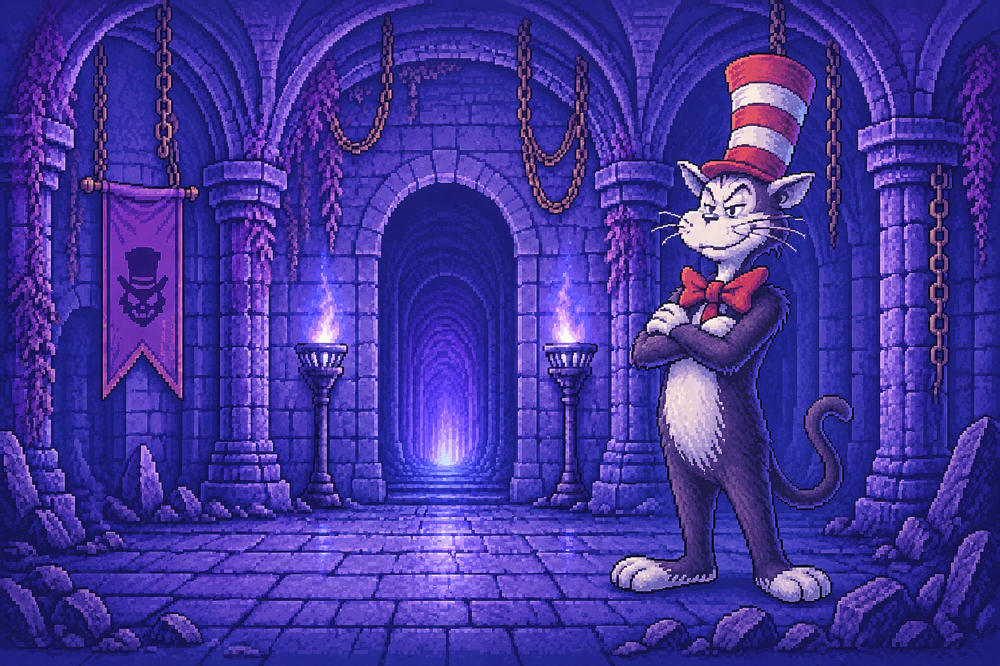

Habilidades
- Spring Boot, pruebas unitarias (Mockito, JUnit)
- Oracle Cloud
- Git/GitHub
- AWS
- Python, librerías como Scikit Learn, NumPy, Pandas, PyPlot
Página web desarrollada en Java y JavaScript desarrollada en mi último año de carrera. Simula la aplicación de Pinterest para la versión página web. Se utiliza una base de datos escritas en PostgreSQL y alojada en Superbass.

Algoritmo de IA implementado a una aplicación que recomienda locales de comida. Utiliza librerías como Scikit Learn y PyPlot para entrenar el modelo y testearlo.

Minijuego realizado en Python, utiliza la librería Tkinter para diseñar e implementar las animaciones y diseño. Es un juego de estrategia que te da pistas para adivinar un número secreto. Basado en el primer proyecto de la carrera.

Presentación y Sobre mí
Me llamo Tiare Salazar y me especializaré en devOps. Me inicié en Ingeniería en Informática el 2025 en Duoc UC. He realizado cursos en Python e IA y mi sueño es ser una devOps senior que trabaje en una organización del gobierno como la Educación. Me interesa ser una profesional que permita que la tecnología en general esté a disposición de los alumnos, alumnas y docentes. Lo que más me interesa de mi trabajo es el proceso que lleva a la excelencia.
Contacto
tiaresalazar.g@gmail.com
Viña del Mar, Chile